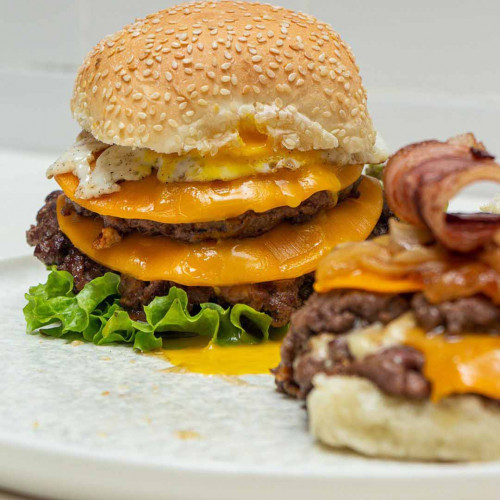

Hamburguesa

La Hamburguesa clásica de carne es un plato popular que a mucha gente les gusta
Les contamos cómo se prepara este plato, los ingredientes que necesitarán son:
- Bife de chorizo 500 g
- Asado 500 g
- Provoleta feteada de 1 cm
- Panceta feteada
- 1 kg de cebolla cortada en juliana
- Manteca
- Azúcar mascabo
- Cheddar feteado
- Pan
El procedimiento es el siguiente:
Mezclar los blend de carne unificar y armar hamburguesa de 120 g
Cocinar en un chapa y aplastar, cubrí con la provoleta y queso cheddar
Caramelizar las cebolla con la manteca y el azúcar mascabo
Armar las hamburguesa con la panceta crocante y aderezar